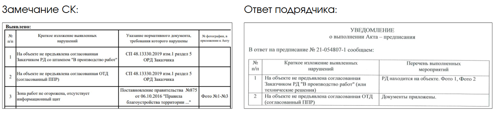
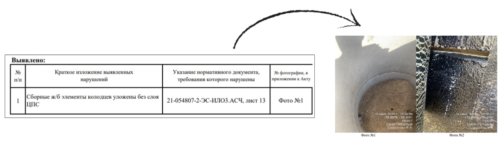
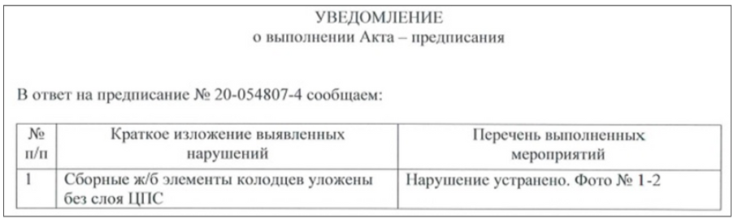
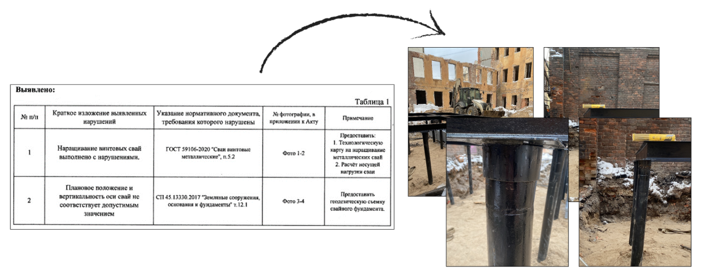

Акты-предписания
Андрей, вот вы и на финишной прямой! Остался всего один урок. На нем мы разберем, что такое акт-предписание и как грамотно его оформлять. Вы рассмотрите реальные примеры заполненных актов, а в конце урока попробуете себя в роли инженера СК и решите, устранили ли подрядчики предписанные нарушения.

В процессе производства работ инженер строительного контроля должен проверять все этапы производства работ и, если было зафиксировано нарушение, которое может повлиять на качество и безопасность работ, необходимо оформить Акт-предписание.
Рассмотрим основные причины, по которым может быть оформлен данный акт:
- Нарушения складирования
- Отсутствие разрешений на работы
- Производство работ при отсутствии утвержденной рабочей документации
- Отсутствие ограждений опасной зоны: котлованы, траншеи и т.п.
- Отсутствие при производстве работ средств индивидуальной защиты
- Применение строительных материалов, не предусмотренных проектом
- Нарушение технологий работ
- Отсутствие или некорректное ведение Журнала общих и специальных работ
Это лишь малый перечень причин, на основании которых оформляется акт-предписание.
В подрядных организациях есть практика штрафных санкций к сотрудникам, которые допустили нарушения, которые будут указаны в акте-предписании. С одной стороны, если нарушение можно устранить непосредственно при проверке, предложите прорабу исправить его сразу. Если нарушение критическое и не может быть исправлено немедленно, или ответственный за строительство отказывается это делать, то в таком случае обязательно оформляется акт-предписание.
эксперт строительного контроля
Оформление акта-предписания не должно стать прихотью строительного контроля, он оформляется для предупреждения и устранения критических и значительных нарушений при производстве работ.
Специально для вас я сделала скринкаст, в котором показала, как оформлять акт-предписание. Обязательно посмотрите его, чтобы безошибочно выполнить практическое задание в конце урока и использовать навыки в дальнейшей работе.
Теперь давайте рассмотрим несколько ситуаций, при которых были оформлены акты-предписания.
Пример 1. Предписание, которое касается наличия документации на объекте

👌🏻Такое уведомление можно принимать.
В нем есть ответ, что именно исправил подрядчик. Специалист строительного контроля подписывает уведомление и направляет обратно подрядчику. В процессе повторного выезда эти пункты можно проверить еще раз, и, если у подрядчика не окажется этих документов снова, акт-предписание составляется повторно.
Пример 2. Предписание, которое касается нарушения технологии работ

В нормативных документах указан лист проекта, так как на этом листе присутствуют требования при монтаже колодцев. Также к предписанию приложены материалы фотофиксации.
Ответ подрядчика:

К уведомлению приложено фото, на котором зафиксированы работы по разборке ж/б элементов и нанесен слой ЦПС, а также фото дальнейшей герметизации слоем гидроизоляции согласно РД.
👌🏻Такое уведомление также принимается.
Пример 3. Предписание, которое касается нарушения технологии работ с приостановкой СМР

⛔️При контроле свайного поля было выявлено критическое нарушение СМР. Предписание оформляется с приостановкой работ. Такую работу необходимо переделывать в объеме 100%.
🔍В ходе поиска причин было установлено, что геология была произведена неверно, поэтому устройство свайного поля согласно проекта было изначально невозможно.
⚙️Подрядчик полностью демонтировал данный фундамент и заменил тип свай, при этом понес огромные затраты и срыв сроков ввода объекта.
⚠️При расследовании причин нарушения заказчик задал вопрос, обращал ли специалист строительного контроля внимание на это нарушение. Защитой представителя СК стало наличие предписания, которое было направлено всем участникам строительства.
Практикум
Представьте, вы – инженер строительного контроля, который направил подрядчикам три акта-предписания, и уже получил на них ответы. Ваша задача определить, будете ли вы принимать такие уведомления об устранении. После того как выберите вариант ответа, система подсветит его правильность соответствующей реакцией.
Посмотрите шуточное видео. На нем наглядно показано. как стоит выписывать предписания и как не стоит поступать.
*В следующем курсе вас ждет продолжение серии видео «Правильно-неправильно» :) Не пропустите!